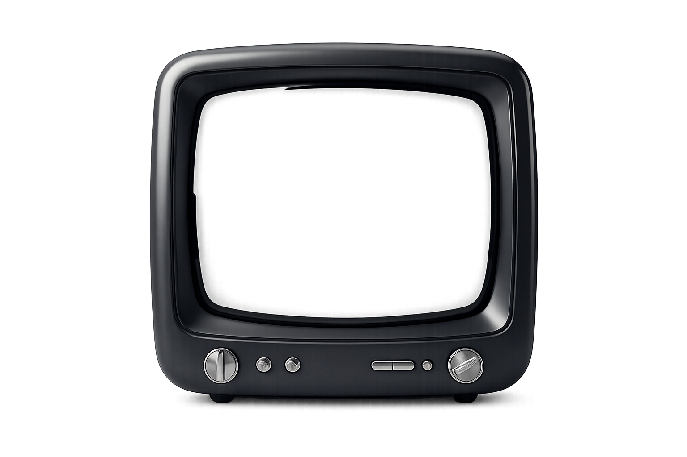

Estamos migrando sistemas para integrar nuevos métodos de trabajo y herramientas de análisis más robustas. Aunque el sitio se encuentra temporalmente fuera de servicio por estas actualizaciones, podes poner a prueba tus reflejos mientras finalizamos esta transición. Gracias por tu paciencia.
